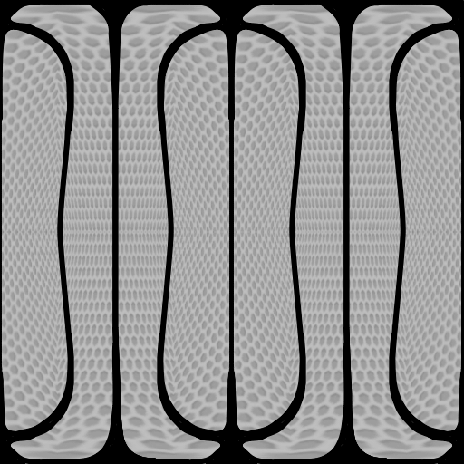

Current listing
CSC 391: Extended Web Technologies
Course projects for the class site, kept on their own shelf so the grading path stays direct.
Open course pageCourses
This folder-based path stays available for compatibility, but it now matches the tone of the rest of the site.

Current listing
Course projects for the class site, kept on their own shelf so the grading path stays direct.
Open course pageDirect route
The main navigation points to a top-level Courses page first, then into this same course path.
Return to Courses page